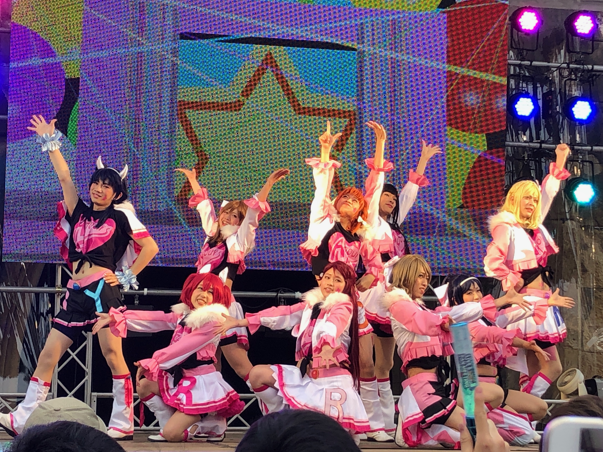

What is the gender??
Posted on Sat, 18 May 2019 in diary
What is the difference between man and woman?
Today, I have watched a performance of a circle called "Todai Love Live!". The reason I went to see was that "the department's sync belongs to this circle" and "My friend invited me", so I was not really interested in it until I went.
However, as I went there, I changed the way to see them, and the geeks including them. I would like to summarize what I am thinking now.

geeks' good manners
First, I thought that the geeks were very kindly men who protected their manners. They listened carefully the announce and did not do things they were told not to (ex. Jump, lift people, MIX.).
In addition, they respected the actors and spoked out to cheer the performers. I was also moved by such attitude
What is the diff?
The next thing is that even boys are pretty. I am not a gay and a love target is girl, but I thought that the face can be girlish with makeup (the aunt who watched the performance in front of me was surprised that "Hmm? are they boys?? I considered them completely girls.), the behavior can be changed. Furthermore, the style and shape were rather good.
I lost the distinction between man and woman.
2D
Finally they were three-dimensional, but Love Live! is originally a two-dimensional animation. I could not see two-dimensional geeks with good eyes until today, but I thought it was all right. Moreover, I thought it stands to reason. Two-dimensions can easily realize the ideal performances and is permanent.
I felt sympathy for the pursuit of eternal things.
Finally
Their group ID is "". I forgot…:(
There is a vote in May Festival, please support them by all means!
【五月祭公演】
— 東大ラブライブ！ (@todai_lovelive) 2019年5月6日
2日とも異なる内容の公演です！ぜひ来てください!!
♪Aqout LoveLive! ～Landing action Yeah!!～
5/18（土）17:05〜18:00
♪Aqout 五月祭課外活動 ～Aqout ミニライブ 2019～
5/19（日）09:22〜09:50
※五月祭委員会と弊団体から注意事項がありますので画像もご覧ください🙇♂️ pic.twitter.com/BTvUyFGvzt